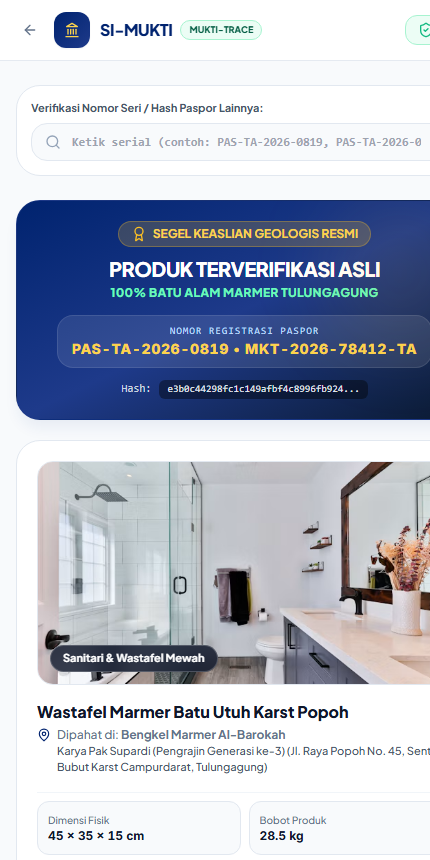
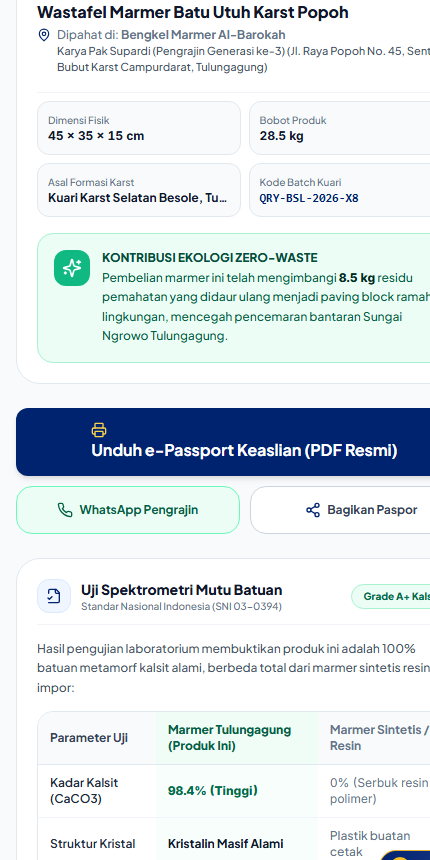

Label kode QR tahan cuaca berstempel dinas pada karya marmer jadi.
Konsumen domestik maupun ekspor cukup mengarahkan kamera ponsel pintar untuk membuka paspor web responsif.
Pemindaian instan tanpa perlu unduh aplikasi (kamera bawaan / Web-PWA).

Autentikasi karya, identitas pengrajin (Pak Supardi), & kuari Besole.

Uji spektrometri CaCO3 98.4% (SNI 03-0394) & rekam jejak zero-waste.